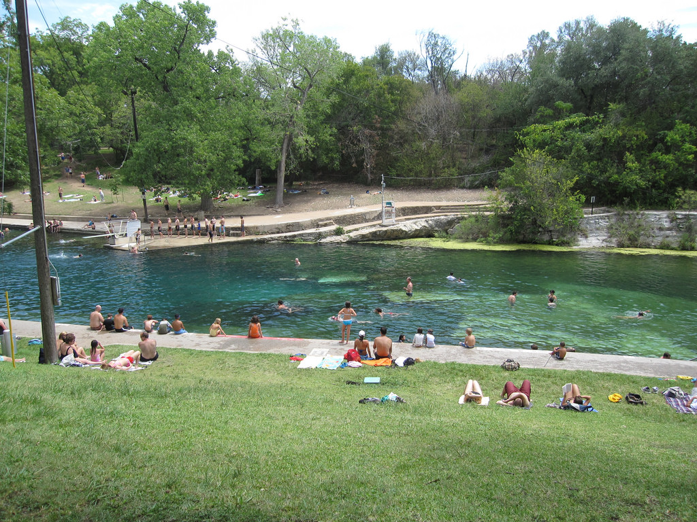

If you don't live in Austin, you might not be familiar with our most prized gem.. Barton Springs Pool!
Image Credit: Roger Mommaerts on Flickr, Creative Commons License
The pool is fed by a natural spring, and maintains a constant temperature between 68 and 71 degrees year-round.
Long considered sacred, the springs were used by the Tonkawa Native American tribe before the Spanish settled the area in the 17th century.
The city was deeded the springs, and the surrounding area, by Andrew Zilker (the namesake for the springs' home, Zilker park), and in the 1920s the city expanded the swimming area by damning the springs and building concrete sides.
In addition to the fridgid temperature, the pool's natural, uneven limestone bottom contributes to this unique swimming pool, complete with grasses and even small fishes!
The pool is generally open yearround from 5 a.m. to 10 p.m. Friday through Wednesday, and admission to the pool is $3 for Austin residents. Admission is free in the winter and in the summer from 9 p.m. until closing.
| Lifeguard Schedule | |
|---|---|
| Time | Swim Type |
| 5a.m. - 8a.m. | Swim at Own Risk (no fees) |
| 8a.m. - 9p.m. | Guarded Swim (admission fees apply) |
| 9p.m. - 10 p.m. | Swim at Own Risk (no fees) |
To maintain the safety of the springs for all to enjoy, Zilker Park asks visitors to leave the following items and activities at home:
To continue planning your trip, visit Barton Springs' webpage. This page has lots of great elements, including a sidebar, navbar and buttons. But that's not all, if you change the size of the browser window, you can see it is also mobile responsive!